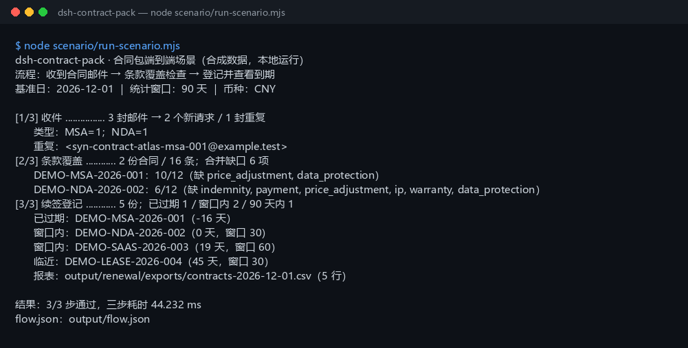

真实运行截图

上图是 node scenario/run-scenario.mjs 的真实输出，不是示意图（原始终端文本）。数据全部为 DEMO-* / example.test 合成值。
这个包解决什么
同一批合同邮件、合同文本和续签登记表在三个插件之间传递，而不是三个样例各跑一遍。
它不做法律判断、不自动发续签提醒、不解析扫描件。条款“缺失”和“已过期”仍需人工复核。
你需要准备什么
把文件放进仓库 04-build/dsh-contract-pack/scenario/data/ 对应目录，保持表头和 EML 头不变。
| 文件 | 放在哪里 | 最少需要的字段 |
|---|---|---|
| 合同邮件 | eml/ | From、Subject、Message-ID；可选 Thread-Id、Date |
| 合同正文 | contracts/ | 纯文本，每个条款单独一行、以 1. 2. 开头；文件名用合同编号 |
| 续签登记表 | renewal/ | contract_no,counterparty,start_date,end_date,renewal_window_days,owner,amount |
日期写 YYYY-MM-DD 且必须真实存在；金额最多两位小数；合同编号在登记表内不区分大小写唯一。续签请用新编号（如 -v2），不要改历史行。
三步操作
先运行同一条命令（脚本一次跑完）：
$ cd 04-build/dsh-contract-pack $ node scenario/run-scenario.mjs
屏幕上是 [1/3]～[3/3] 三段；下面每一步对应一段。
第 1 步：收件（dsh-legal-intake）
对应 [1/3] 段
[1/3] 收件 ................ 3 封邮件 → 2 个新请求 / 1 封重复
类型：MSA=1；NDA=1
重复：<syn-contract-atlas-msa-001@example.test>
3 封邮件里，MSA 请求和它的重发共用同一个 Message-ID，所以只登记 2 个新请求，1 封重发被压掉。分类结果为 MSA=1、NDA=1；doctor 的 E_LEGAL_MESSAGE_DUPLICATE 与 E_LEGAL_THREAD_REPEATED 说明去重生效。
第 2 步：条款覆盖（dsh-legal-clause）
对应 [2/3] 段
[2/3] 条款覆盖 ............ 2 份合同 / 16 条；合并缺口 6 项
DEMO-MSA-2026-001：10/12（缺 price_adjustment, data_protection）
DEMO-NDA-2026-002：6/12（缺 indemnity, payment, price_adjustment, ip, warranty, data_protection）
MSA 有 10 条编号条款，命中 10 项 playbook，缺 price_adjustment、data_protection，覆盖率 0.83；NDA 有 6 条，命中 6 项，覆盖率 0.5。两份合同的条款编号都连续，clause_integrity 没有报 E_CLAUSE_NUMBER_*。
第 3 步：登记并查看到期（dsh-contract-renewal）
对应 [3/3] 段
[3/3] 续签登记 ............ 5 份；已过期 1 / 窗口内 2 / 90 天内 1
已过期：DEMO-MSA-2026-001（-16 天）
窗口内：DEMO-NDA-2026-002（0 天，窗口 30）
窗口内：DEMO-SAAS-2026-003（19 天，窗口 60）
临近：DEMO-LEASE-2026-004（45 天，窗口 30）
报表：output/renewal/exports/contracts-2026-12-01.csv（5 行）
基准日固定为 2026-12-01，统计窗口 90 天；5 份合同全部登记成功。已过期 1 份、续签窗口内 2 份、90 天内 1 份，另有 1 份只在 counts.later 计数。脚本会再登记一次第一份合同，验证返回 E_CONTRACT_DUPLICATE。
结果文件
| 路径 | 内容 |
|---|---|
output/flow.json | 本次运行的完整链路：每步输入哈希、输出摘要、耗时、状态、产物清单 |
expected/flow.json | 金标；测试剔除时间字段后逐字段比对 |
output/renewal/contracts.jsonl | 本地合同登记表（一行一份合同，追加式） |
output/renewal/exports/contracts-2026-12-01.csv | 到期报表：9 列，含 days_left 与 status |
scenario/data/ | 合成输入：3 封 EML、2 份合同文本、1 张续签登记 CSV |
output/ 每次运行重建，已在 .gitignore 中忽略；金标在 expected/flow.json，不要被覆盖。
出错怎么办
| 报错 | 通常原因 | 下一步 |
|---|---|---|
E_LEGAL_EML_INVALID | EML 缺 Subject / From，或邮件头分隔空行被删 | 对照样例，保留头部与空行 |
E_LEGAL_MESSAGE_DUPLICATE / E_LEGAL_THREAD_REPEATED | 同一 Message-ID / 线程出现多次 | 这是去重生效；确认是否真的重发，不要删原邮件 |
E_CLAUSE_EMPTY / E_CLAUSE_TREE_INVALID | 合同文本为空，或条款号不在行首 | 每个条款单独一行、以 1. 2. 开头 |
E_CLAUSE_NUMBER_DUPLICATE / E_CLAUSE_NUMBER_GAP | 条款号重复或跳号 | 先修编号再重跑；此时覆盖结果不可信 |
E_CONTRACT_DATE_INVALID | 日期不是 YYYY-MM-DD，或写了 2026-02-30 | 改成真实 ISO 日期 |
E_CONTRACT_DUPLICATE | 同一合同编号（不区分大小写）已登记 | 续签用新编号（-v2）；不要改 JSONL |
E_CONTRACT_WINDOW_INVALID | 续签窗口 / 统计天数不是 0–3650 的整数 | 传整数；0 表示只在到期当天算窗口内 |
E_CONTRACT_PATH_INVALID | 导出文件名带 ../、/ 或中文 | 只传 [A-Za-z0-9._-] 文件名 |
E_CONTRACT_STORE_FAILED | $DSH_HOME/storages/dsh-contract-renewal 不可写或 JSONL 被改坏 | 确认目录可写；先备份再修 JSONL，不要删数据 |
| 其他错误 | 文件权限、临时目录或版本变化 | 保留完整报错和 output/flow.json，先读错误里的“下一步” |
三个插件
仓库内完整中文说明：04-build/dsh-contract-pack/README-zh.md；英文简版：README.md。运行与测试命令：
$ node scenario/run-scenario.mjs $ node --test test/*.test.mjs $ node scenario/run-scenario.mjs --write-expected # 有意改动输出后重建金标